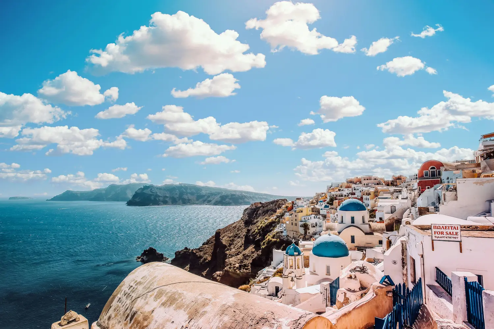

愛琴海 - 聖托里尼 - 希臘
介紹
聖托里尼，以其標誌性的白色建築、藍色圓頂和令人驚嘆的日落景色，成為基克拉迪群島中的天堂。這顆希臘寶石吸引著尋求浪漫、冒險和難忘回憶的旅行者。
必看景點
- 火山口景觀：費拉、伊亞和伊美羅維利提供火山口和愛琴海的全景視野。
- 阿克羅提利考古遺址：探索古代遺址，了解米諾斯文明。
- 紅沙灘：這是一個獨特的火山沙灘，擁有深紅色的懸崖和清澈的海水。
活動推薦
- 日落巡航：在火山口周圍航行，邊享受當地葡萄酒邊欣賞日落美景。
- 參觀酒莊：品嚐阿西爾提可葡萄酒，探索依附在火山坡上的葡萄園。
- 探索村莊：漫步於皮爾戈斯和梅加洛霍里狹窄的小巷，發現隱藏的寶藏。
體驗活動
- 徒步旅行：沿著從費拉到伊亞的風景小徑行走，或探索斯卡羅斯岩周圍的懸崖。
- 潛水與浮潛：發現水下洞穴和沉船。
- 烹飪課程：學習如何製作傳統希臘菜餚。
戶外冒險
- 登上普羅菲蒂斯·伊里亞斯山：攀登到島上的最高峰，享受全景視野。
- 水上運動：在愛琴海進行滑水、立槳衝浪和皮划艇。
文化活動與節慶
- 復活節慶典：見證燭光遊行和煙火表演。
- 聖托里尼藝術工廠：參加音樂會、展覽和戲劇表演。
美食與葡萄酒之旅
- 當地美食：品嚐法瓦豆泥、蕃茄丸子和蜜餞果仁蜜餅。
- 海邊海鮮：在海濱的小酒館享用美味的海鮮。
購物區
- 伊亞精品店：尋找手工珠寶、陶瓷和紡織品。
- 費拉市場：購買紀念品和當地產品。
住宿
- 豪華洞穴酒店：入住懸崖邊的套房，享有私人浸泡池。
- 迷人的賓館：體驗正宗的聖托里尼款待。
餐飲與夜生活
- 日落晚餐：在美景中享用新鮮的海鮮。
- 雞尾酒吧：品嚐以火山為靈感的飲品。
交通方式
- 當地巴士：經濟實惠，並提供村莊之間的風景路線。
- 全地形車和滑板車：隨心所欲地探索島嶼。
小貼士與必備品
- 防曬：陽光強烈，請塗抹防曬霜並戴上帽子。
- 提前預訂：住宿和日落巡航很快就會被預訂一空。
- 尊重當地習俗：參觀教堂時請穿著得體。